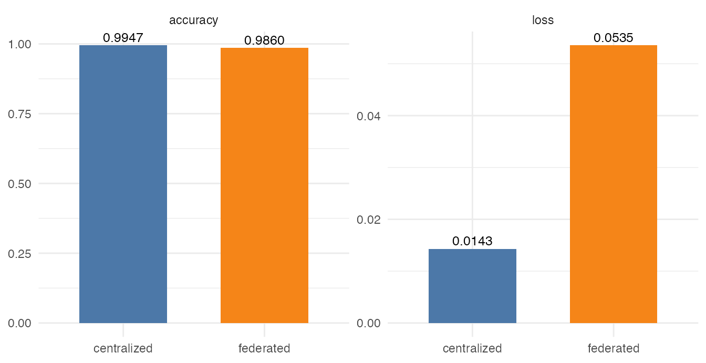

PathMNIST Direct Image ResNet Benchmark
pathmnist-direct-image-resnet.RmdHistorical validation artifact (pre-0.3). The recorded results and API snippets below describe the retired client privacy-profile/Secure Aggregation architecture. They do not validate the current v0.3 lifetime-DP contract and must not be used as deployment or security instructions. See
README.mdand the serverARCHITECTURE.mdfor the enforced contract.
This vignette records a direct-image dsFlower benchmark on PathMNIST,
a MedMNIST v2 histopathology image dataset. The run uses a balanced
binary subset of adipose tissue versus colorectal adenocarcinoma
epithelium, split evenly across three Opal/Rock servers. The Opal table
contains metadata and relative image paths; image files are read inside
each Rock by the pytorch_resnet18 template.
The benchmark has two branches. The trusted_internal
branch compares a federated ResNet-18 checkpoint with a centralized
PyTorch baseline over the same 1,500 images. The
consortium_internal branch repeats the federated execution
under the profile that requires Secure Aggregation, suppresses per-node
metrics and still produces a global model checkpoint.
It is laid out in two parts: first the commands you would run to reproduce the benchmark, then the recorded results of that run loaded from the committed evidence artifact. No live Opal servers are required to render this page; the command chunks are shown for reference and are not executed.
Running This Benchmark
Each node holds an image metadata table (label plus the
relative image paths) while the PNG files stay on the matching Rock
server; only aggregate training history and model parameters return to
the researcher.
1. Connect to the DataSHIELD nodes. Open a single session across the three Opal nodes that serve the PathMNIST metadata table.
library(DSI)
library(DSOpal)
library(dsFlowerClient)
builder <- DSI::newDSLoginBuilder()
builder$append(server = "node1", url = "https://opal-node-1.example.org",
user = "researcher", password = "********",
table = "dsflower_demo.pathmnist_cohort")
builder$append(server = "node2", url = "https://opal-node-2.example.org",
user = "researcher", password = "********",
table = "dsflower_demo.pathmnist_cohort")
builder$append(server = "node3", url = "https://opal-node-3.example.org",
user = "researcher", password = "********",
table = "dsflower_demo.pathmnist_cohort")
conns <- DSI::datashield.login(builder$build(), assign = TRUE, symbol = "D")2. Run the federated fit. Build the ResNet-18 model and recipe, stage the nodes, run FedAvg over the server-side image tables, then clean up and log out.
model <- ds.flower.model.pytorch_resnet18(
n_classes = 2L, learning_rate = 0.001, batch_size = 64L,
local_epochs = 1L, image_size = 32L
)
recipe <- ds.flower.recipe(
model = model,
strategy = ds.flower.strategy.fedavg(),
privacy = ds.flower.privacy.trusted_internal(),
target = "label",
num_rounds = 2
)
ds.flower.nodes.init(conns, data = "D", symbol = "flower")
ds.flower.nodes.prepare(
conns, symbol = "flower",
target_column = "label",
run_config = c(recipe$model$params, recipe$strategy$params,
list(data_type = "image")),
privacy = recipe$privacy, template_name = recipe$model$template
)
ds.flower.nodes.ensure(conns, symbol = "flower", template_name = recipe$model$template)
fit <- ds.flower.run.start(recipe, conns = conns, verbose = TRUE)
ds.flower.nodes.cleanup(conns, symbol = "flower")
DSI::datashield.logout(conns)The consortium_internal branch repeats the same run with
privacy = ds.flower.privacy.consortium_internal(), which
enforces Secure Aggregation and suppresses the per-node metrics.
Recorded Results
The values below come from the committed evidence artifact for the run described above; no live servers are contacted when the article renders.
Dataset And Split
class_table <- data.frame(
source_class = names(evidence$dataset$classes),
binary_label = as.integer(unlist(evidence$dataset$binary_mapping)),
class_name = unname(unlist(evidence$dataset$classes)),
row.names = NULL
)
site_table <- evidence$site_counts
knitr::kable(class_table)| source_class | binary_label | class_name |
|---|---|---|
| 0 | 0 | adipose |
| 8 | 1 | colorectal adenocarcinoma epithelium |
knitr::kable(site_table)| site | rows | label0 | label1 |
|---|---|---|---|
| opal1 | 500 | 250 | 250 |
| opal2 | 500 | 250 | 250 |
| opal3 | 500 | 250 | 250 |
The benchmark draws 1500 PathMNIST images from MedMNIST v2 train split, split into 500 rows on each of 3 nodes, resized to 32x32, and trains pytorch_resnet18 for 2 federated rounds.
Centralized Baseline
centralized <- data.frame(
engine = "centralized PyTorch",
samples = evidence$centralized$n_samples,
epochs = evidence$centralized$epochs,
loss = evidence$centralized$eval$loss,
accuracy = evidence$centralized$eval$accuracy,
stringsAsFactors = FALSE
)
knitr::kable(centralized, digits = 4)| engine | samples | epochs | loss | accuracy |
|---|---|---|---|---|
| centralized PyTorch | 1500 | 2 | 0.0143 | 0.9947 |
The centralized PyTorch baseline trained on 1500 samples for 2 epoch(s), reaching an evaluation loss of 0.0143 and accuracy 0.9947.
Federated Trusted Branch
trusted_profile <- evidence$profile_results$trusted_internal
trusted_history <- trusted_profile$history
comparison <- evidence$trusted_internal_comparison
knitr::kable(trusted_history, digits = 4)| round | loss | n_clients | n_failures |
|---|---|---|---|
| 1 | 0.1484 | 3 | 0 |
| 2 | 0.0535 | 3 | 0 |
trusted_table <- data.frame(
run = c("centralized", "federated checkpoint"),
loss = c(comparison$centralized_loss,
comparison$federated_checkpoint_loss),
accuracy = c(comparison$centralized_accuracy,
comparison$federated_checkpoint_accuracy),
failures = c(NA_integer_, comparison$federated_failures),
stringsAsFactors = FALSE
)
knitr::kable(trusted_table, digits = 4)| run | loss | accuracy | failures |
|---|---|---|---|
| centralized | 0.0143 | 0.9947 | NA |
| federated checkpoint | 0.0535 | 0.9860 | 0 |
The federated checkpoint’s final history loss was 0.0535; against the centralized baseline the checkpoint loss delta was 0.0392 and the accuracy delta -0.0087, leaving this branch pass.
plot_df <- data.frame(
run = rep(c("centralized", "federated"), 2),
metric = rep(c("loss", "accuracy"), each = 2),
value = c(comparison$centralized_loss,
comparison$federated_checkpoint_loss,
comparison$centralized_accuracy,
comparison$federated_checkpoint_accuracy),
stringsAsFactors = FALSE
)
if (requireNamespace("ggplot2", quietly = TRUE)) {
ggplot2::ggplot(plot_df, ggplot2::aes(x = run, y = value, fill = run)) +
ggplot2::geom_col(width = 0.62, show.legend = FALSE) +
ggplot2::facet_wrap(~ metric, scales = "free_y") +
ggplot2::scale_fill_manual(values = c("#4C78A8", "#F58518")) +
ggplot2::labs(x = NULL, y = NULL) +
ggplot2::theme_minimal(base_size = 11)
} else {
old <- par(mfrow = c(1, 2))
on.exit(par(old), add = TRUE)
barplot(plot_df$value[plot_df$metric == "loss"],
names.arg = c("central", "fed"), ylab = "loss",
col = c("#4C78A8", "#F58518"))
barplot(plot_df$value[plot_df$metric == "accuracy"],
names.arg = c("central", "fed"), ylab = "accuracy",
col = c("#4C78A8", "#F58518"))
}
Secure Aggregation Branch
secagg <- evidence$consortium_internal_secaggThe consortium_internal branch ran with Secure
Aggregation required, metric release set to suppressed by
consortium_internal profile, 0 federated client failures, and a
persisted global checkpoint (TRUE), leaving the branch
pass.
The SecAgg branch is not interpreted through its loss value because
consortium_internal suppresses released per-node metrics.
The validation criteria for this branch are run completion, zero
federated client failures, activation of the Secure Aggregation
requirement and production of the global model artefact.
Evidence Scope
Direct-image learning path. 1500 PathMNIST PNG images remain file-backed on the server side while Opal tables expose only metadata and relative paths.
Centralized-versus-federated utility. The federated ResNet-18 checkpoint reaches 0.986 accuracy versus 0.9947 for the centralized PyTorch baseline on the same image table.
SecAgg profile execution. The consortium profile completes with zero client failures, metric suppression and a persisted global checkpoint.